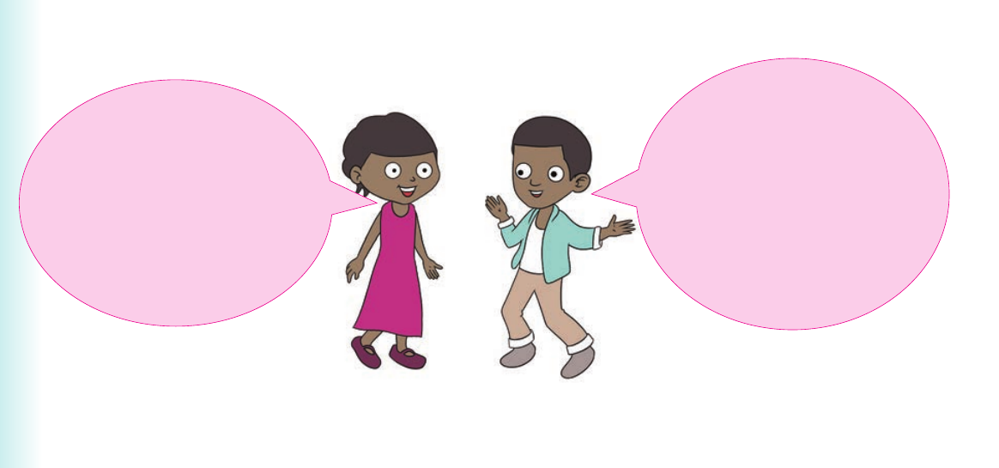

4. Listen to or observe the story about Greedy Hyena. Then, respond to the following questions orally or using sign language: (a) What are the names of the two friends in the story? (b) What did Hare say in his song? (c) What caused the death of Hyena? (d) Why was Hyena a bad friend?
5. Tell or sign any story you know to the class.
I participate in simple conversations using speech or sign language

I participate in simple conversations. Hi, Jose. Do you know where the bus stop is? Yes, Rehema. It is just behind the train station. Activity 1
Practise the following conversation: Maiga : What is your name? Tom : My name is Tom. Maiga : How old are you?